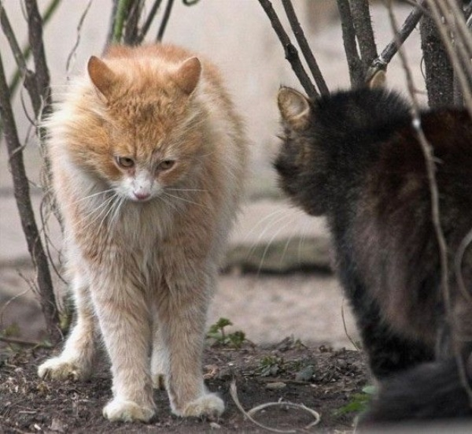

Язык тела
Специалистам известно около 60 различных поз кошки: наклоны головы, выражения мордочки, позиции хвоста и ушей. Если ты научишься понимать эти позы, то сможешь «читать» её мысли, так как твоя кошка не способна скрыть ни малейшего чувства!
Взгляд кошки
В 60-х годах знаменитый немецкий учёный Конрад Лоренц отметил: «Самое тонкое движение мысли мгновенно отражается на мордочке кошки: это спокойное и доверчивое лицо сразу же изменяется, и малейшая эмоция выражается или появившейся складочкой, или подергиванием мускулов, глаз». Итак, по глазам твоей кошки ты можешь определить, что она чувствует.
Большие открытые глаза. Если кошка в хорошем настроении, то её глаза открыты широко, а уши навострены вперёд. Будучи очень любопытной, она изучает мир.

Избегающий взгляд. Если она сделала что-то недозволенное, у неё появляется избегающий тебя взгляд. Но не рассчитывай, что у твоей киски будут виноватые глаза, как у нашкодившей собаки!
Полузакрытые глаза. Если глаза у неё полузакрыты, значит, кошка доверяет тебе. Но не заблуждайся: несмотря на видимую расслабленность, она следит за всем, что шевелится!
Прямой взгляд. Если кошка смотрит тебе в глаза, знай, что между кошками это означает вызов!
Когда она в гневе, боится или ты огорчаешь её, то она сообщает тебе об этом по-своему!
Полностью доверяя тебе, кошка позволяет потрогать её живот. Для тебя это честь: ведь живот — это самая уязвимая часть её тела!
|
О чём рассказывает хвост? Спокойно поднятый вертикально хвост выражает радость. Это происходит, например, тогда, когда ты даёшь коту поесть!
Волнующийся хвост передаёт беспокойство, нервозность или гнев. Это полная противоположность собаке, хвост которой виляет, когда она довольна.
Со вздыбленной шерстью хвост кажется больше, чем он есть, и имеет угрожающий вид. Если ко всему ещё он и виляет, то это значит, что кошка готовится к атаке!
Поджатый и опущенный между задних лап хвост означает, что кошка отказывается от борьбы и показывает полное смирение.
|
Недовольные гримасы
Мордочкой кошка тоже выражает чувства и не только когда кусается! Находясь перед кошкой меньшего размера, она поджимает губы и показывает свои клыки, это обозначает вызов. Когда она довольна, губы её расслабляются. Понаблюдай за её лбом: когда она колеблется или начинает злиться, ты увидишь на нём морщинки. Все эти сигналы, конечно, не зависимы один от другого: всё тело выражает её чувства.
Спокойная или возбуждённая, твоя кошка — это индивидуальность.
Обратно на главную страницу
|